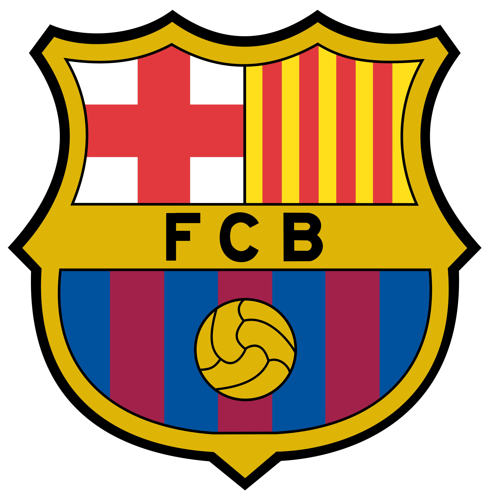
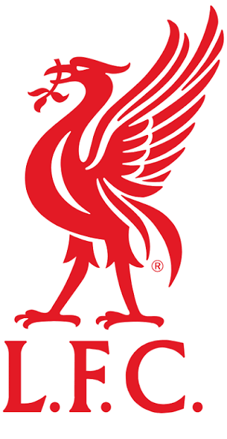
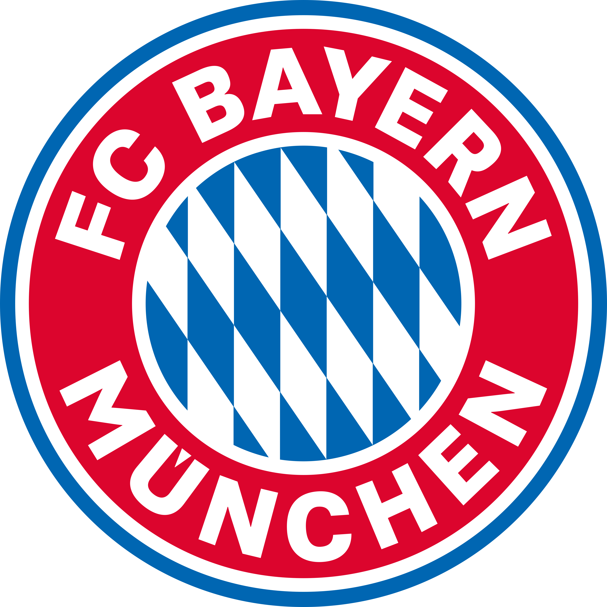
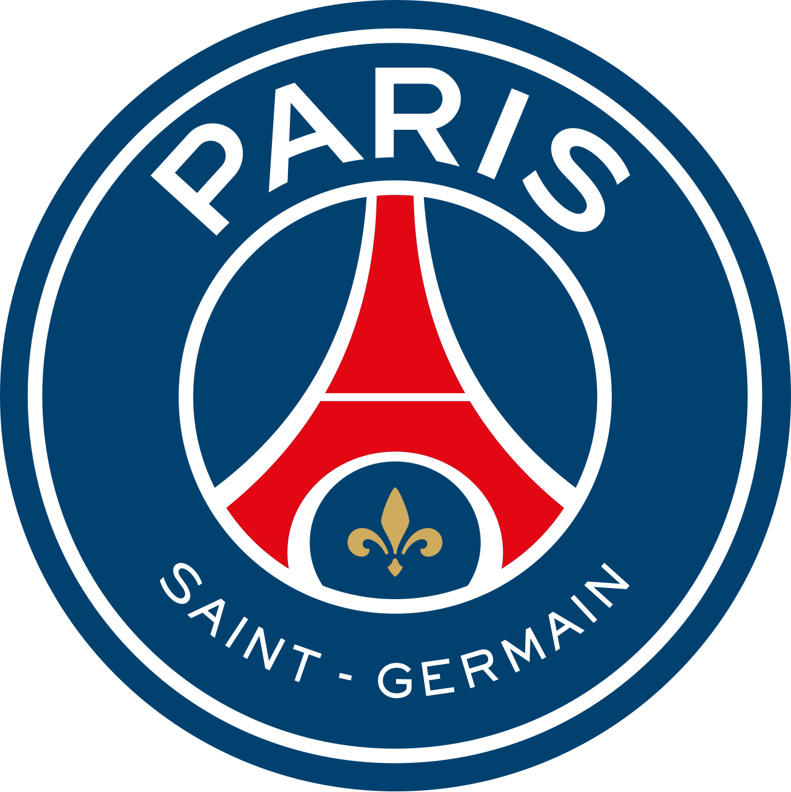

Os maiores clubes do futebol mundial
Conheça alguns dos principais times internacionais de futebol e sua importância no cenário mundial.
Principais Times

FC Barcelona
País: Espanha
Um dos clubes mais tradicionais da Espanha, conhecido por sua história e estilo de jogo.

Real Madrid
País: Espanha
Um dos clubes mais vitoriosos e conhecidos da história do futebol mundial.

Liverpool FC
País: Inglaterra
Um dos grandes clubes ingleses, com uma enorme tradição no futebol europeu.

Bayern de Munique
País: Alemanha
Um dos maiores clubes da Alemanha e uma das principais forças do futebol europeu.

Paris Saint-Germain
País: França
Um dos principais clubes franceses e uma equipe de destaque no futebol europeu.
Inter de Milão
País: Itália
Um dos clubes mais tradicionais da Itália, com grande história no futebol europeu.